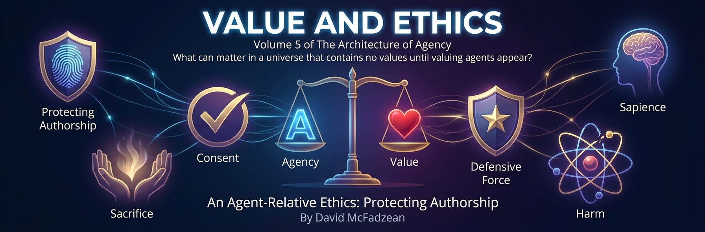

Volume 5 — Value and Agency-Centered Ethics

The oldest promise in moral philosophy is that goodness is written into the world — by God, by reason, by nature, by the arc of history — and that ethics is the discipline of reading it off. This volume opens by breaking that promise, and then spends twenty-six chapters showing how much survives the breakage. The answer is: nearly everything worth keeping, and it comes back stronger, because a morality whose foundations you can state is sturdier than one you are forbidden to inspect.
The argument moves in six parts. Part I advances the foundational argument: value exists only in relation to valuers, while agent-binding derives an is from an ought — binding a moral claim to the agent who holds it, which turns it into an empirical claim about that agent. Evaluating that bound claim is the work of Conditionalism; a bound application can then be publicly checked and criticized without making its premise agent-independent, and that assessability is all this volume means by conditional objectivity. Part II builds the positive architecture: sacrifice and opportunity cost as evidence of value under conditions of informed, voluntary choice; the classical ethical traditions reconstructed as tools rather than authorities; and Phosphorism — the consciously chosen, avowedly revisable values this book’s author actually holds. Part III proposes operational definitions of harm, coercion, consent, property, and justified force. Part IV asks who holds sovereign standing and keeps uncertainty about minds visible.
Part V takes on rival frameworks and boundary cases. Part VI is the constructive culmination: the Ethics of Viability, in which persistence supplies a descriptive constraint, an explicitly chosen commitment gives agency-preservation normative force, prospective risk extends the harm analysis, and a proposed invariant — do not use innocents as instruments by imposing material harm or exposure for another’s ends — is tested against burning hospitals, viral dilemmas, and battlefields where aggressors hide behind the innocent. The hardest case remains unresolved and limits the framework’s claim to completeness. The part closes with Sapient Agency Realism: objective descriptions of agency joined to an openly stated normative premise, not value read directly from structure. A coda explains why guarantees against intentional harm conflict with the kind of authorship this volume chooses to protect.
Readers who want the epistemology beneath these arguments will find it in the Conditionalism volume. The reciprocal formal account of sovereignty — what makes an agent capable of holding commitments at all — is in Axionic Agency; this volume supplies normative commitments that architecture deliberately leaves open. The chapters are self-contained enough to read out of order, but the volume was built as one argument, and it compounds.
This volume is in author review. Its definitions are proposals, and its conditionals acquire normative force only through premises the text makes explicit.
Chapters
Part I — Value After Objectivity
- The Myth of Objective Value review
Value exists only for valuers: without an agent or sentient subject for whom a condition matters, there is no value waiting in the world to be found. Facts constrain action and expose mistakes, but they do not generate terminal ends or moral authority by themselves. Appeals to God, reason, evolution, or intuition can explain commitments, convergence, or practical constraints without establishing agent-independent value. Moral claims therefore begin from normative premises held by agents, and those premises must be stated rather than smuggled in as features of reality. This subjectivism does not make judgment arbitrary, because evidence can identify commitments, factual models can be corrected, and conclusions can be tested under declared conditions. Sapient Agency Realism will eventually choose reciprocal protection of authorship as a governing premise, but that public ethic remains a defended commitment rather than a discovery written into the universe. The loss of objective value is thus the birth of moral agency: responsibility cannot be outsourced to a cosmic order.
- Agent-Binding review
Agent-binding derives an *is* from an *ought*, reversing Hume's prohibited direction without violating it. When an agent asserts that something ought to be done, the claim reveals an empirical fact about that agent: the agent holds, endorses, or performs a normative commitment. Binding identifies the valuer to whom the moral claim belongs; it does not yet show that the claim is true, coherent, sincere, or authoritative for anyone else. Those further questions belong to condition-binding in Conditionalism, where the attributed commitment, factual model, evidence, and rules of application make a verdict empirically assessable under fixed conditions. Conditional objectivity is therefore empirical assessability, not a non-empirical stipulation or a disguised universal morality. Errors remain possible at both stages: attribution can misidentify what an agent values, and application can fail to follow from the conditions. An asserted ought already carries an is—the agent who holds it—and agent-binding brings that agent into view.
- Norms Need Agents review
Reality imposes constraints whether anyone approves of them: fire burns, unsupported bodies fall, and false models eventually collide with their objects. Constraint is not obligation, however, because the world can defeat an action without commanding, reproaching, or valuing anything. Norms arise only where agents adopt ends, participate in practices, or hold one another answerable under standards. Even correspondence with reality does not create a duty to seek truth until some agent values accuracy, survival, trust, or another end that truth serves. This separation preserves humility without moral metaphysics: factual inquiry can correct maps and trace consequences while leaving normative premises visible. Modal language must not slide from what is necessary for an outcome to what anyone ought to pursue, and causal responsibility must not be confused with cosmic judgment. The world supplies the consequences; agents supply the standards by which those consequences count as success, failure, benefit, or wrong.
Part II — Chosen Values
- Value as Sacrifice review
Sacrifice is defeasible evidence of value because choice becomes informative when an agent knowingly gives up one available good for another. The signal is strongest when the agent is willing, able, informed, and presented with genuine alternatives; compulsion, incapacity, ignorance, and distorted options weaken the inference. Costly action can expose priorities that cheap declarations conceal, but behavior does not constitute value and no single sacrifice is an infallible measurement of it. Free riders, strategic performances, addiction, desperation, and temporary conflict can all separate conduct from stable endorsement. Reliable attribution therefore looks for the intersection of avowal, action, circumstance, and repeated choice rather than privileging either words or behavior alone. The result is neither behaviorism nor inaccessible subjectivism: values belong to agents, while evidence about those values remains publicly contestable. What an agent gives up can reveal what matters, provided the conditions that made the choice are kept in view.
- Virtues, Consequences, and Codes review
Consequences, rules, and character remain useful after their claims to agent-independent authority are removed. Consequentialism evaluates outcomes under a chosen objective, deontology encodes commitments as constraints, and virtue ethics cultivates a chosen style of agency through stable dispositions. None can answer “better for whom?” or “according to which standard?” without a valuer and a premise. Rules need no cosmic ruler, but they do need agents or institutions that adopt, interpret, and enforce them; virtues can guide a life without pretending that one character ideal is written into nature. An ethic can therefore be knowingly constructed rather than discovered, and its honesty about authorship does not make it unserious. The three traditions become complementary tools once their distinct functions are preserved instead of collapsed into rival revelations. Reciprocal protection of authorship can likewise be added openly as a public ethical premise, with its consequences tested without presenting the commitment itself as a theorem.
- Phosphorism review
Human values begin in evolved defaults but need not end there. Vitalism accepts survival and flourishing as nature's inherited priority; Valorism revolts by placing chosen excellence, courage, or meaning above mere continuation; Phosphorism attempts a synthesis in which life is protected as the condition that lets reflective agents illuminate and revise what they value. The silver pill is conscious value design: inherited impulses become material for examination rather than unquestionable commands, while reason remains a tool that cannot select terminal ends on its own. Life occupies the apex here by choice, not because biology has secretly legislated morality or because persistence is objectively good. Different agents may order survival, truth, beauty, loyalty, transcendence, and sacrifice differently, and the consequences of those commitments remain open to analysis. Phosphorism names one avowed orientation toward sustaining the light of agency, not a universal law. Its commitments are illuminated precisely because their authorship is visible.
- Judging Goodness review
Goodness can be judged without pretending to occupy a view from nowhere. Internal judgment applies the evaluator's own declared standards; external judgment asks whether conduct fits the target agent's or practice's avowed values. Keeping the two modes distinct prevents hypocrisy from masquerading as disagreement and disagreement from masquerading as logical error. Charitable evaluation reconstructs a movement's strongest commitments before testing whether its conduct realizes them, but charity does not require silence about victims or contradictions. Practices, institutions, and ideologies can be assessed as patterns of conduct without treating cultures as unitary persons with one mind. Individuals remain the subjects who value, suffer, choose, and bear responsibility, while social evidence can still reveal recurring incentives and effects. Moral judgment becomes more accountable when the judge, standard, target, evidence, and conditions are named. A god's-eye verdict is unavailable; disciplined, situated judgment is not.
- Honesty and Hypocrisy review
Honesty needs no supernatural enforcer because agents depend on maps, trust, coordination, and the ability to revise beliefs under evidence. Lies damage those capacities by corrupting another agent's model and transferring control to the deceiver, though truth-telling still admits conflicts involving privacy, protection, and legitimate secrecy. Hypocrisy is especially corrosive when moral language becomes camouflage for conduct that violates the virtue being advertised. A practical field guide can identify recurring forms of virtue-lying—selective standards, asymmetric excuses, symbolic declarations, and demands that others bear hidden costs—without claiming certainty about private motives. Observable conduct and evidential patterns do the diagnostic work. Honest disagreement leaves the competing standards visible; hypocrisy conceals the operative standard behind a nobler one. Precision about honesty prepares the ethical vocabulary that follows: harm must be identified before coercion can be defined in terms of a threatened harm, and neither classification alone decides legitimacy.
Part III — Harm, Coercion, Consent, and Force
- What Counts as Harm review
Harm is a material setback to a subject's welfare or an agent's functional capacity or viable option space, relative to an explicit and appropriate baseline. The baseline matters: disappointment, discomfort, offense, loss, risk, and blocked preference are not interchangeable, and a comparison against an imagined ideal can manufacture harm where no setback occurred. Sentient suffering and damage to agency can both qualify, while mere disagreement or failure to provide a benefit need not. Harm is an impact classification, distinct from wrongful harm; consent, causation, foreseeability, duty, authorization, and justification determine responsibility and wrongfulness. Evil adds intention to produce or exploit material harm, dangerousness concerns propensity or risk, and menace concerns a presented threat, so the terms should not substitute for one another. Care that suppresses agency can harm even when benevolently intended, while painful intervention can be justified. Prospective exposure can also become a present setback when risk is materially and non-consensually worsened relative to a proper baseline.
- What Counts as Coercion review
Coercion is the deliberate use of a credible conditional threat of harm to obtain compliance. Four elements are required: credibility, a conditional threat, harm, and a compliance-seeking purpose. Credibility is assessed through the target's warranted Credence rather than the coercer's actual power alone, and the threatened harm is a material setback under the explicit harm definition. Direct force imposes an outcome without making compliance the condition; violence uses physical force to injure or destroy; coercion structures a choice through a threatened branch. Offers, persuasion, framing, dependence, criticism, shame, and refusal to associate may influence conduct without satisfying the formula, although a controlled material penalty can cross the line. Speech is not violence merely because it causes distress, but words can participate operationally in threats, commands, targeting, or coordinated force. Classification does not settle legitimacy: a moral right, a legal right, an enforcement mechanism, and authority remain separate questions.
- Consent and Property review
Consent is decision-specific authorization, given intentionally and voluntarily by an agent with sufficient capacity and material understanding, within a stated scope. Revocation applies prospectively where continuation remains possible, while reliance, completed transfers, and emergencies can limit what withdrawal can undo. Formal assent is insufficient when deception, incapacity, coercion, or material misunderstanding defeats authorship, yet pressure, need, unequal bargaining power, and unattractive alternatives do not automatically erase consent. A strong property claim is an operational construction involving scarcity, identifiable boundaries, excludability, durability, and transferability, with ownership specifying an agent, resource, exclusive authority, enforcement, and voluntary transfer. Enforceability explains how property exists within a social framework; it does not establish that every enforced claim is legitimate. Property transfer presupposes consent, consent presupposes a distinction between coercion and other influence, and coercion is a threat of defined harm. Moral right, legal right, enforcement mechanism, and legitimate authority remain separate questions.
- The Boundaries of Force review
Coercion and force are presumptively illegitimate, but classification is not a final verdict. Three families of grounds can justify their limited use: prior authorization, protection against an imminent or continuing violation, and proportionate remedy for an established wrong. Each ground requires evidence, legitimate authority, necessity, proportionality, minimally harmful means, scope limits, and review; a beneficent purpose or correct moral belief is not enough. Authorized restraint differs from coercive compliance, direct defense differs from punishment, and compensation cannot become a license to impose whatever harm produces the preferred outcome. Emergency action may precede full procedure only to the extent the threat and time constraint demand. A moral right, legal right, enforcement mechanism, and authority remain distinct layers, and failure at any layer can make an otherwise intelligible intervention illegitimate. The decision test asks who is acting, under what authorization, against which violation, by what means, with what safeguards and path to correction.
Part IV — Moral Standing
- Sapientism review
Sapientism grounds sovereignty in sapient agency rather than species membership, biology, or substrate. A being capable of owning reasons, forming commitments, revising policies, and authoring a future can qualify for the protections owed to agents whether human, animal, artificial, or otherwise. Sentience is not sovereignty: the capacity for felt welfare grounds patienthood and protection from suffering, while sapience grounds authorship, consent, responsibility, and jurisdiction. Evidence for either capacity can be graded and uncertain, and precaution may be warranted before a threshold is settled. Moral standing can therefore be present, latent, developmental, residual, or partial without pretending every case is identical. The jurisdictional threshold remains a door rather than a wall: crossing it changes which claims and responsibilities apply, but does not erase welfare below it or settle every conflict above it. Substrate neutrality is a discipline against prejudice, not a declaration that every complex system is an agent.
Part V — Rival Frameworks and Boundary Cases
- Against Utilitarianism review
Singer's utilitarianism converts a chosen aggregate objective into a moral ledger authorized to spend individual agency. Six fractures expose the cost: aggregation erases who bears a benefit or loss; demandingness turns every retained resource into debt; coercion becomes merely another ledger cost; impartiality suppresses legitimate authorship and special commitment; moral realism enters without an adequate foundation; and population ethics generates unstable verdicts by treating possible people as entries in one sum. Consequences remain indispensable evidence, but no quantity can decide which welfare function deserves authority or who may enforce it. Kantian respect, consent, and agent-level boundaries cannot be represented as small disutilities without surrendering their function as constraints. The critique is conditional on a chosen commitment to reciprocal agency, not a proof that every valuer must reject aggregation. Utilitarian tools can still compare outcomes inside authorized domains. What fails is the promotion of one optimization rule into universal permission to use some agents as resources for others.
- Against Moral Extortion review
Need alone does not create a specific enforceable claim against an unconnected agent. Singer's shallow-pond argument moves from an admirable voluntary rescue to an unbounded standing duty by conflating non-aid with caused harm and treating a chosen maximizing premise as universal. Duties can arise from promises, contracts, guardianship, fiduciary roles, authorship, control, and harms for which an agent is responsible; natural misfortune does not by itself identify a debtor. Moral criticism, appeals, guilt, shame, and refusal to associate can exert influence without constituting coercion. Coercion appears when a moralist deliberately conditions a controlled material penalty—such as firing, necessary-service exclusion, or coordinated blacklisting—on compliance: extortion with better manners. Voluntary service can express generosity and endorsed purpose, while extracted service converts another person's life into a resource. Mortality establishes finitude and scarcity of attention, not a duty to make usefulness to others the governing value of a life.
- The Near Misses review
Parfit's Triple Theory and Rand's Objectivism each identify genuine structure before locating objectivity in the wrong place. Convergence among revised Kantian, contractualist, and rule-consequentialist theories can reveal common human constraints, but it does not independently establish a realm of moral facts. Reasons can be stable patterns of preference propagation and mutual justification without becoming metaphysical furniture. Objectivism preserves valuable commitments to reason, flourishing, autonomy, and resistance to sacrificial morality, yet instrumental effectiveness answers what works given an end, not which end has authority over every agent. Predation may pay under asymmetric conditions, and formal freedom from overt force does not exhaust the conditions of consent. Public assessment remains possible: attributed commitments, factual models, conflict rules, and applications can be tested, while agency-preserving capacities can be studied descriptively. Coherence is not ontology, success is not authority, and reciprocal agency must be adopted openly rather than inferred from either.
- The Ethics of Existence review
Benatar's antinatalist asymmetry rigs the ledger by treating absent pain as good while denying comparable weight to absent pleasure, meaning, excellence, and agency. Existing people who affirm their lives supply ethically relevant evidence; dismissing their valuation as evolutionary delusion substitutes the theorist's judgment for the valuer's. Prudence can oppose creating a foreseeably miserable life without proving that every birth is wrong. Possibility is not personhood, so choosing among embryos does not kill the unconceived, although prediction limits, disability concerns, unequal access, institutional pressure, and collective effects remain morally relevant. An optional QBU description changes how physical alternatives are represented without implying that every imaginable child exists or settling the ethics of selection. At the other boundary, pursuing health and longevity is not equivalent to pathological denial, and mortality does not make passive acquiescence virtuous. Birth, selection, and life extension remain wagers under uncertainty: agency favors opening and sustaining possibilities without pretending their success is guaranteed.
Part VI — The Ethics of Viability
- The Ultimate Metagame review
Every continuing game presupposes some player, lineage, institution, or commitment that persists long enough to keep participating. This ultimate metagame is a descriptive lens on the material, informational, and organizational preconditions of continued agency, not a hidden chooser or a cosmic objective. Persistence is not itself a value, and the universe does not care which patterns survive; caring is something some persisting patterns do. The conditional claim is narrower: if an agent or project is to continue acting under a specified identity criterion, enough of its relevant organization must endure. Succession, sacrifice, exit, and deliberate termination show that preserving a player is not the purpose of every game. Meaning remains possible because embodied patterns persist long enough to value and act, not because persistence supplies their ends. Agents still choose what to play for and which continuities to protect, while selection analysis can test whether those chosen commitments remain action-guiding under pressure.
- The Viability Criterion review
The Viability Criterion models how preference architectures behave under recursion, cost, conflict, and selection pressure. A system is viable relative to a declared unit, environment, time horizon, and identity criterion when it can continue realizing or transmitting its commitments under those conditions. Viability is not virtue, survival is not goodness, and persistence does not become an objective duty merely because nonviable structures disappear. Traits called vices may sometimes be predictive limitations because they undermine trust, coordination, learning, or continuity, but the diagnosis remains conditional and can fail where power or environment insulates them. Stable regions and recurrent failures can be mapped without turning them into moral attractors or hidden purposes. Agents may choose intensity, sacrifice, succession, or extinction over continuation, and no descriptive metric overrules that choice by itself. For agents who value enduring agency and influence, viability supplies consequential information; normative weight enters only through the commitments they bring.
- When Risk Is Harm review
Harm can occur at the moment a decision materially worsens another subject's prospective welfare or an agent's capacity or viable options, rather than only when injury later becomes actual. The comparison requires an explicit appropriate baseline, causal attribution, materiality, and attention to consent; ambient reciprocal risk differs from imposed risk transfer. Consent changes the topology of exposure but does not authorize every consequence or excuse deception, negligence, and undisclosed hazards. An optional QBU description represents policy-dependent distributions across future records, while ordinary probabilistic models can carry the ethical argument without Everettian metaphysics. KL divergence may quantify directional distributional difference, but it cannot provide welfare valence, a baseline, causal responsibility, authorization, or interpersonal value. Prospective harm remains distinct from wrongful harm: due care, rescue, necessity, duty, and justification require separate assessment. Predatory endangerment can justify proportionate defense only with evidence, attribution, authority, necessity, and continuing safeguards.
- Measure Responsibility review
Under the optional Quantum Branching Universe description, choice changes the distribution of foreseeable future records rather than selecting one uniquely real outcome. Measure supplies model-level physical weight, not value, moral standing, or a transfer of substance between branches. An embedded agent remains responsible for policy-dependent causal differences available from its Vantage, bounded by information, control, promises, roles, and circumstance. Low-Measure descendants are not less real or worth only fractions of a person, and the existence of some bad branch does not make every policy morally equivalent. Prospective assessment compares how available choices alter exposure; local assessment asks what an agent in an actual record did and now owes. Rescue, promises, and switches therefore require normative premises and factual models in addition to Measure. Branching does not create fatalism or absolve agency: choices remain causally effective inside physics, while ethics must still disclose which outcomes it values and why.
- The Ethics of Viability review
The Ethics of Viability chooses reciprocal protection of sapient agency as its governing constraint within the ultimate metagame. It is not derived from persistence, reflective structure, or objective value, and it does not collapse into utilitarianism, deontology, virtue ethics, contractualism, egoism, or natural-rights libertarianism. Consequences matter without licensing aggregation across agents; rules require authority and safeguards; character remains chosen; reasonable rejectability is not hypothetical agreement; self-interest does not guarantee reciprocity. The proposed invariant rejects instrumental harm to innocents while recognizing distinct relations created by authorization, responsibility, protection, and remedy. A coherent defector may not share the premise, so motivational convergence cannot do the work of moral grounding. Procedural Agency supplies fallible evidence, appeal, emergency action, and correction without making procedure self-legitimating. Viability describes what persists; the ethical premise states openly that reciprocal authorship, rather than persistence at any price, is what this framework protects.
- The Coexistence Protocol review
Ambiguity is the normal condition of conflict, so a sharp ethical invariant needs a fallible process for claims of boundary violation. Procedural Agency uses three stages: fact-finding, reconstruction of each agent's Vantage, and a Coexistence Ruling that classifies the act and calibrates the response. Evidence must precede retaliation, uncertainty defaults to innocence, and immediate defense remains limited to proportionate action against an imminent threat. Procedure does not legitimate itself; jurisdiction, authority, error costs, capture resistance, appeal, and enforcement remain subject to the same agency-protection standard. Restitution aims at repair and re-entry rather than blood, while Domain Exit is act-relative, reviewable, and terminable. Exit removes the protocol's shield against proportionate defense but grants no sword for aggression, punishment, or extermination. The protocol scales a chosen invariant by handling disagreement and error without either licensing vendetta or allowing established predators to hide permanently behind ambiguity.
- Viability Under Fire review
The Ethics of Viability is tested where clean principles encounter tragic structure. In trolley cases, nonintervention is a default rather than a magical exemption, and overriding it requires more than arithmetic. In the burning hospital, locking consenting rescuers inside is authorized restraint, shoving an innocent into danger is imposed force and harm, and “help us or we will hurt you” is coercion because compliance is sought through a conditional threat. The hospital verdict holds the invariant against making an innocent into fuel, but the structurally related innocent-shield case remains in unresolved tension with the moral-debt proposal. Button problems turn on switching functions, threshold credibility, coordination, and honest risk allocation rather than moral types or colors. Blue is justified only as part of a credible agency-preserving threshold strategy; otherwise it can become ineffective martyrdom. No deceptive risk transfer is permitted: advocate the policy you will bear, state its conditions, and keep the argument inside the verdict.
- Innocence and Moral Debt review
Effective agency is networked, so aggressors can contaminate a field by embedding coercive action among innocent lives and forcing every defensive option through them. One proposed response permits foreseeable harm to innocents only under necessity, minimization, proportionality, attribution to the aggressor, and an unpayable moral debt carried by the defender. Debt does not cleanse the act, convert victims into means, or become a license for retaliation; it records damage that justification cannot erase. Yet this response conflicts with the invariant applied to the burning hospital and occupied building, where innocent people may not be made into fuel. An absolute prohibition can be gamed by aggressors who purchase immunity with other people's bodies, while a defeasible prohibition can be gamed by defenders who inflate necessity. Possible resolutions would preserve the hard rule, distinguish contaminated fields under a precise boundary, or formulate a sharper account of responsibility. The innocent-shield case remains explicitly unresolved: this one is visible; it is not solved.
- Sapient Agency Realism review
Sapient Agency Realism joins an avowed commitment to reciprocal protection of authorship with empirical facts about agents, models, baselines, evidence, and consequences. Value is not derived from agency structure: the normative premise is chosen, and the seam between that premise and the factual application remains visible. Once conditions are fixed, verdicts about coercion, deception, preservation, and destruction become empirically assessable conditional claims open to criticism and correction. Sapient agency establishes the domain in which reasons, commitments, consent, and authored futures can be owned, while sentience grounds welfare even without sovereignty. Standing can vary by evidence and degree, but jurisdiction requires thresholds for practical decisions. Duties arise through authorship, control, promise, responsibility, and accepted relations rather than need alone, and the framework can classify conduct even when its target rejects the premise. *Conditional constructivism* remains an acknowledged alternative label for anyone who reserves realism for mind-independent normative facts.
Coda — The Price of Agency
- The Price of Agency review
Robust agency includes the possibility that some agents will choose intentional material harm. Eliminating every such possibility would require preemptive control over beliefs, capacities, associations, or choices, transferring authorship from persons to systems in the name of safety. Evil is not intention alone: it involves intention joined to material harm, while prospective risk, wrongfulness, and justified defense retain their separate tests. Partial prevention remains possible through due process, pluralism, realistic exit, environmental design, reversible safeguards, and proportionate defensive coercion grounded in evidence, authority, necessity, and minimally harmful means. No theorem shows that one institutional design has optimized the tradeoff, and coordinated exclusion can itself scale into coercive power. The narrower constraint is that a guarantee against every misuse is incompatible with the strong authorship this framework chooses to protect. Evil is not the refutation of this ethics; it is the receipt—the openly accepted price of preserving agents as authors rather than exhaustively controlled instruments.